🪐 Hello and welcome to Jerelle's space website 🪐
Here, I'll be sharing information about space related subjects, namely:
- Planets in our solar system
- stuff beyond our solar system
- space travel
But first, why can you trust me with the information that will be provided in this website?
Though I am not a complete expert on all things space related, I've been interested in the field for a long time. Also I've participated in AstroChallenge 2025, which was jointly hosted by NUS and NTU (though I didn't get anything notable)
✨ What is Space? ✨
Outer space, or simply space, is the expanse that exists beyond Earth's atmosphere and between celestial bodies.
Within space, there are Solar Systems, which consists of a star and the celestial objects(planets, moons, asteroids) bound to it by gravity. We live on earth which is in a solar system. our solar system is aptly and deservedly dubbed
"The Solar System"
🌕 Why you should care about Space 🌕
While space might seem like just a cool thing to be hyperfixated on, finding out more about space has inadvertently led to many inventions that assist us in our day to day lives, one such example being the GPS. This means that the further studying and exploration of space could lead us to many great inventions in the future.
Also space is just fascinating.
🌌 Cool Space Facts 🌌
Space Fact generator 9000
no one will ever see this placeholder fact
🌌 watch REAL live telescope footage 🌌
🌍 Our Solar System 🌍
Our solar system consists of 8 planets and a sun, in order from closest to the Sun , they are Mercury, Venus, Earth, Mars, Jupiter, Saturn, Uranus, and Neptune.
☀ The Sun ☀
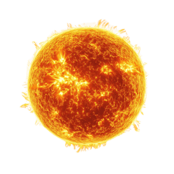
Approx. Mass: 1.9891 x 10^30 kilograms
Approx. Age: 4,500,000,000 years
The Sun is the star located at the centre of the Solar System. It is a massive sphere of hot plasma , heated to incandescence by nuclear fusion reactions in its core, radiating the energy from its surface mainly as visible light and infrared radiation with 10% at ultraviolet energies. It is the main source of energy for life on Earth.
🌑 Mercury 🌑
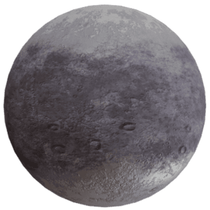
Approx. Mass: 3.30 x 10^23 kilograms
Mercury is the first planet from the Sun and the smallest in the Solar System. It is a rocky planet with a trace atmosphere and a surface gravity slightly higher than that of Mars The surface of Mercury is similar to Earth's Moon, being cratered, with an expansive rupes system generated from thrust faults, and bright ray systems, formed by ejecta.
🌕 Venus 🌕
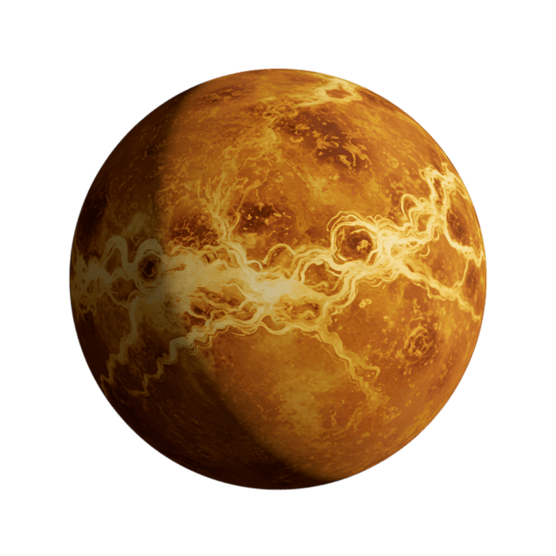
Approx. Mass: 4.867 x 10^24 kilograms
Venus is the second planet from the Sun. Similar in size and mass to Earth, Venus has no liquid water, and its atmosphere is far thicker and denser than that of any other rocky body in the Solar System. The atmosphere is composed mostly of carbon dioxide and has a thick cloud layer of sulfuric acid that spans the whole planet.
🌍 Earth 🌍
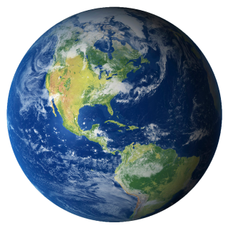
Approx. Mass: 5.9722 x 10^24 kilograms
Earth is the third planet from the Sun and the only astronomical object known to harbor life. This is made possible by Earth being an ocean world, the only one in the Solar System sustaining liquid surface water. Almost all of Earth's water is contained in its ocean, which covers 70.8% of Earth's crust. The remaining 29.2% of Earth's crust is land, which is predominantly located within Earth's land hemisphere in the form of continental landmasses.
🌕 Mars 🌕

Approx. Mass: 6.417 x 10^23 kilograms
Mars is the fourth planet from the Sun. It is also known as the "Red Planet", for its orange-red appearance. Mars is a desert-like rocky planet with a tenuous atmosphere that is primarily carbon dioxide (CO2). At the average surface level the atmospheric pressure is a few thousandths of Earth's, atmospheric temperature ranges from −153 to 20 °C , and cosmic radiation is high. Mars retains some water, in the ground as well as thinly in the atmosphere, forming cirrus clouds, fog, frost, larger polar regions of permafrost and ice caps (with seasonal CO2 snow), but no bodies of liquid surface water. Its surface gravity is roughly a third of Earth's or double that of the Moon.
🪐 Jupiter 🪐
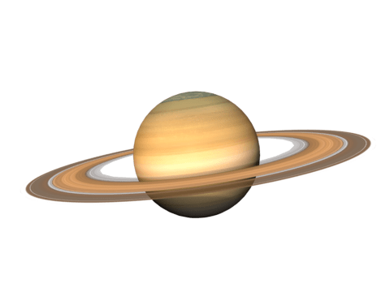
Approx. Mass: 1.89813 x 10^27 kilograms
Jupiter is the fifth planet from the Sun, and the largest in the Solar System. This is a gas giant with a mass nearly 2.5 times that of all the other planets in the Solar System combined and slightly less than one-thousandth the mass of the Sun. Its diameter is 11 times that of Earth and a tenth that of the Sun. Jupiter orbits the Sun at a distance of 5.20 AU (778.5 Gm), with an orbital period of 11.86 years. Jupiter is the third-brightest natural object in the Earth's night sky, after the Moon and Venus, and has been observed since prehistoric times.
🪐 Saturn 🪐
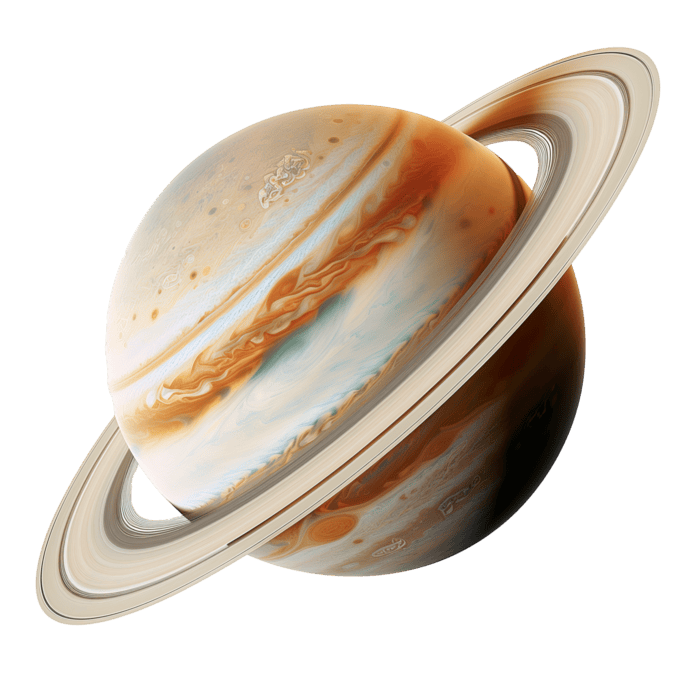
Approx. Mass: 5.685 x 10^26 kilograms
Saturn is the sixth planet from the Sun and the second largest in the Solar System, after Jupiter. It is a gas giant, with an average radius of about 9 times that of Earth. It has an eighth of the average density of Earth, but is over 95 times more massive. Even though Saturn is almost as big as Jupiter, Saturn has less than a third of its mass.
🔵 Uranus 🔵
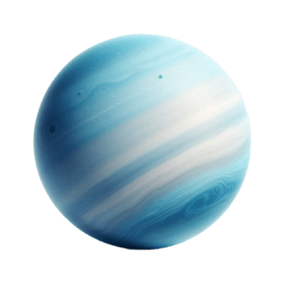
Approx. Mass: 8.68 x 10^25 kilograms
Uranus is the seventh planet from the Sun. It is a gaseous cyan-coloured ice giant. Most of the planet is made of water, ammonia, and methane in a supercritical phase of matter, which astronomy calls "ice" or volatiles. The planet's atmosphere has a complex layered cloud structure and has the lowest minimum temperature (−224 °C) of all the Solar System's planets.
🔵 Neptune 🔵
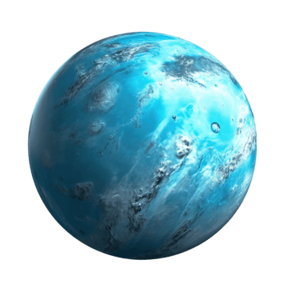
Approx. Mass: 1.024 x 10^26 kilograms
Neptune is the eighth and farthest known planet orbiting the Sun. It is the fourth-largest planet in the Solar System by diameter, the third-most-massive planet, and the densest giant planet. It is 17 times the mass of Earth. Compared to Uranus, its neighbouring ice giant, Neptune is slightly smaller, but more massive and dense. Being composed primarily of gases and liquids, it has no well-defined solid surface.
Test your knowledge!
Not submitted
🌍 Beyond our Solar System 🌍
Beyond our solar system lies interstellar space, a vast region filled with gas, dust, and magnetic fields of the Milky Way. It is dominated by exoplanets—over 6,000 of which have been confirmed—and deep-sky objects like nebulae, pulsars, and black holes. Only a handful of human-made probes, such as NASA's Voyager 1, have ever pierced through the Sun's protective bubble to explore this realm. This page will be going through some of the celestial objects that lie outside our solar system.
🌌 The Milky Way 🌌
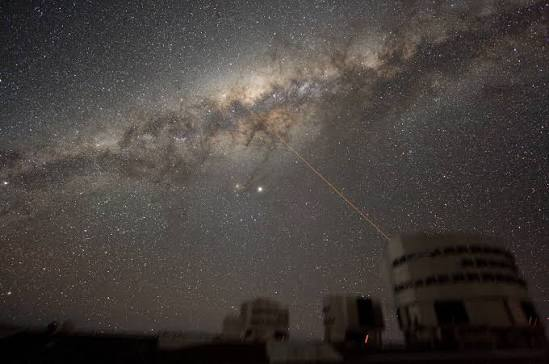
The Milky Way is the galaxy that includes the Solar System, with the name describing the galaxy's appearance from Earth: a hazy band of light seen in the night sky formed from stars in other arms of the galaxy, which are so far away that they cannot be individually distinguished by the naked eye.
It is estimated to contain 100–400 billion stars and at least that number of planets. The Solar System is located about 27,000 light-years from the Galactic Center, on the inner edge of the Orion Arm, one of the spiral-shaped concentrations of gas and dust.
🌌 Nebulae 🌌

A nebula is a distinct luminescent part of the interstellar medium, which can consist of ionized, neutral, or molecular hydrogen as well as cosmic dust. Nebulae are often star-forming regions, such as the Pillars of Creation in the Eagle Nebula. In these regions, the formations of gas, dust, and other materials "clump" together to form denser regions, which attract even more matter and eventually become dense enough to form stars. The remaining material is then thought to form planets and other planetary system objects.
⚫ Black Holes ⚫
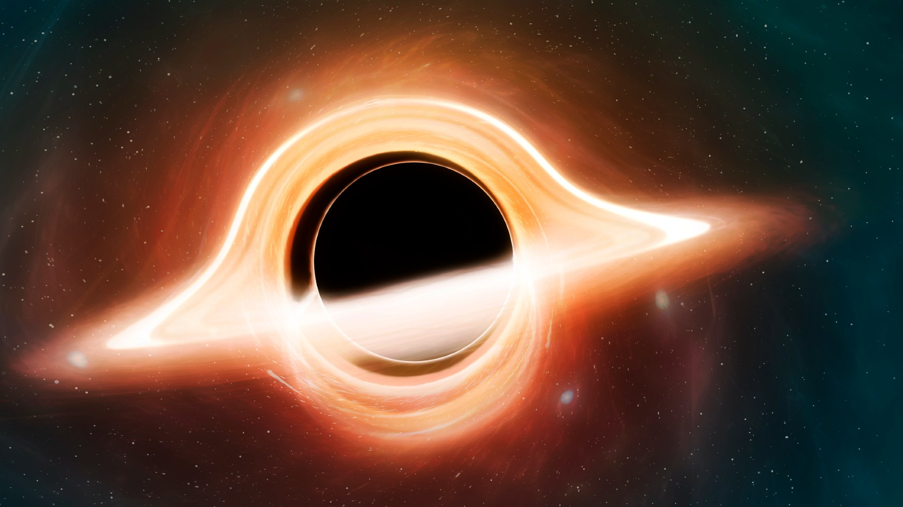
A black hole is an astronomical body so compact that its gravity prevents anything—even light—from escaping. The point of no return is known as the event horizon. Albert Einstein's theory of general relativity, which describes gravity as the curvature of spacetime, predicts that any sufficiently compact mass can form a black hole. Crossing the event horizon traps an object inside, but according to general relativity, it produces no locally detectable change for the object at that instant. The theory also predicts that every black hole contains a central singularity, where the curvature of spacetime becomes infinite.
💫 Pulsars 💫
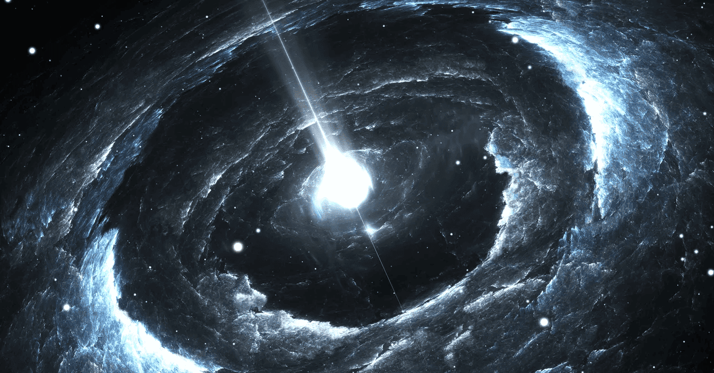
A pulsar is a highly magnetized, rapidly rotating neutron star that emits beams of electromagnetic radiation from its magnetic poles. These beams are only visible when they sweep past Earth, giving pulsars their distinctive pulsing appearance. Neutron stars are incredibly dense and spin with remarkably regular periods, producing pulses that range from milliseconds to seconds. Because of their precise, predictable signals, pulsars are often used by astronomers as cosmic clocks, and they are also considered one of the leading candidates for the source of ultra-high-energy cosmic rays.
🌑 Exo-Planets 🌑
An exoplanet, or extrasolar planet, is a planet located outside our Solar System. The first confirmed detection of an exoplanet was made in 1992, when one was discovered orbiting a pulsar, while the first exoplanet found around a main-sequence star was confirmed in 1995. Interestingly, another planet that was first detected in 1988 was only officially confirmed in 2003, and evidence of a possible exoplanet had even been recorded as early as 1917. As of 2 July 2026, astronomers have confirmed 6,316 exoplanets across 4,725 planetary systems, with 1,055 systems containing more than one planet.
🚀 Space Travel 🚀
Soviet cosmonaut Yuri Gagarin, who launched aboard Vostok 1 on 12 April 1961. During his historic 108-minute mission, Gagarin completed one full orbit of Earth, proving that human spaceflight was possible. Just over eight years later, on 20 July 1969, NASA's Apollo 11 mission achieved another milestone when Neil Armstrong and Buzz Aldrin landed their lunar module in the Sea of Tranquility. Armstrong became the first person to walk on the Moon, accomplishing what many people had once believed to be impossible. Although space travel is still limited today, continued advancements in space exploration could one provide humanity with access to new resources, enable interplanetary travel, and revolutionize the future of our civilization.
🚀 Why Space Travel? 🚀
Improvements in space travel will open many gateways for humanity, including research into extraterrestrial planets for valuable resources, the search for another habitable planet similar to Earth, and continued advancements in technology. Currently, the limits of space remain unknown, so future discoveries made through improved space exploration could redefine society, spearhead the development of innovative technologies, and give more people access to our currently limited resources.
🌕 Symbolism of the Moon Landing 🌕
The Moon landing became a lasting symbol of human ambition, courage, and innovation. When Neil Armstrong first stepped onto the Moon on 20 July 1969, it proved that even the most impossible dreams could become reality through science, determination, and teamwork. Today, it continues to inspire new generations to explore space and push the boundaries of what humanity can achieve.
Press 'Reset Game' to start
Attribution
Pulsar image by WIRED licensed under CC by 4.0
An illustration of a black hole. (Image credit: Mark Garlick/Science Photo Library/Getty Images) licensed under CC by 4.0
Trifid_Nebula_by_Deddy_Dayag licensed under CC by 4.0
Image of milky way by Y. Beletsky licensed under CC by 4.0
Image of Neptune from PNGTree licensed under CC by 4.0
Image of Uranus from PNGTree licensed under CC by 4.0
Image of Saturn from PNGTree licensed under CC by 4.0
Image of Jupiter from PNGTree licensed under CC by 4.0
Image of Mars from PNGTree licensed under CC by 4.0
Image of Earth from PNGTree licensed under CC by 4.0
Image of Venus from PNGTree licensed under CC by 4.0
Image of Mercury from PNGTree licensed under CC by 4.0
Image of Sun from PNGTree licensed under CC by 4.0
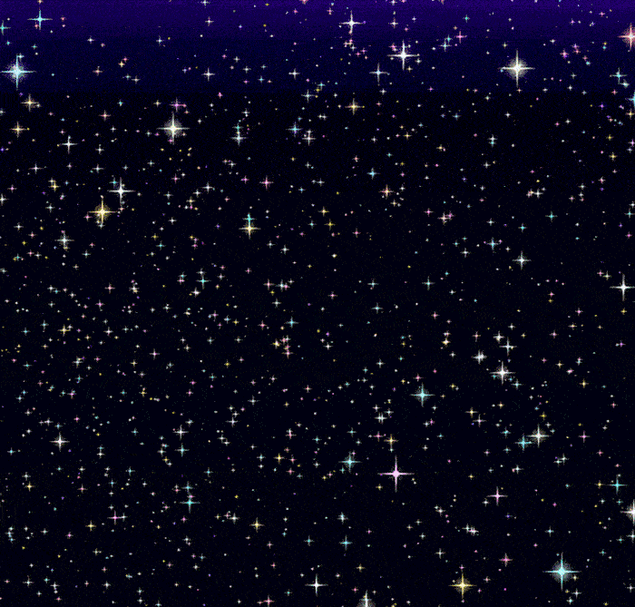
stars gif from GIFcities licensed under CC by 4.0